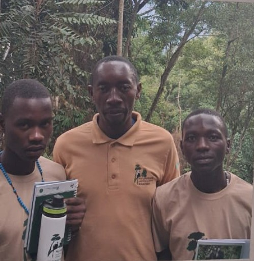
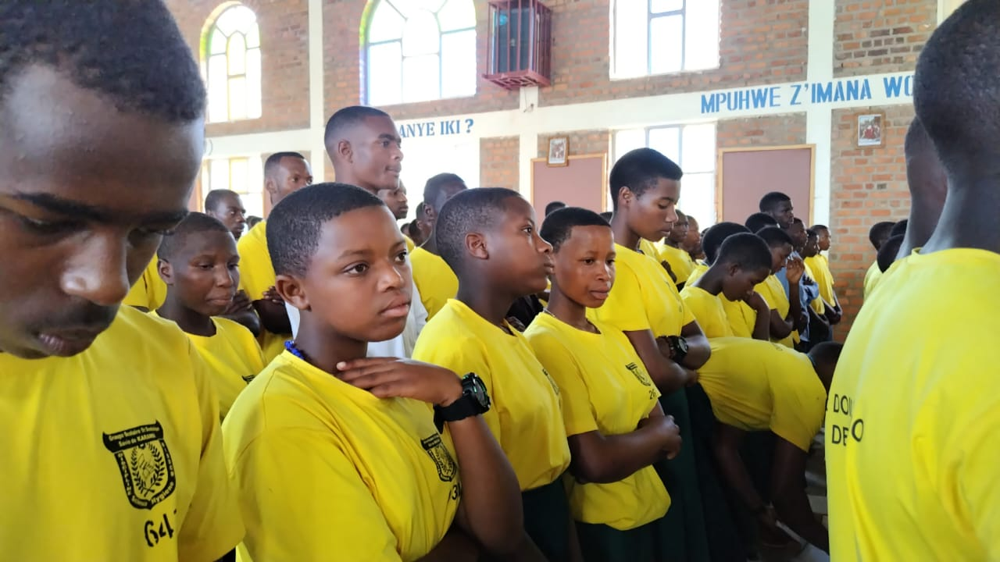
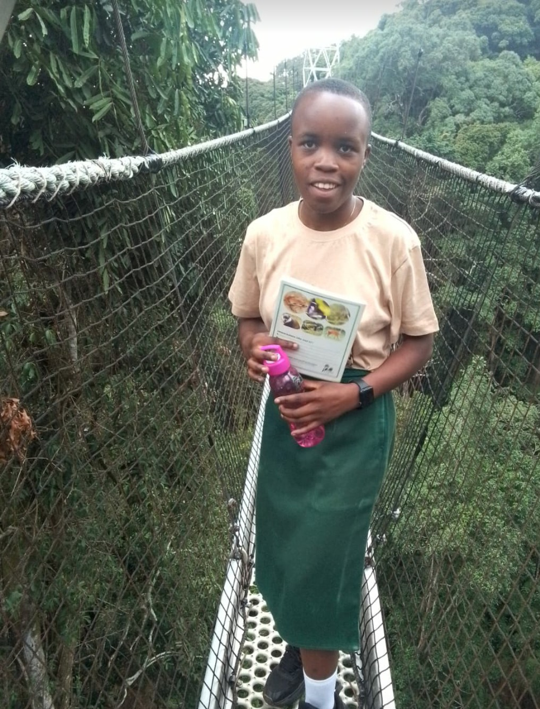
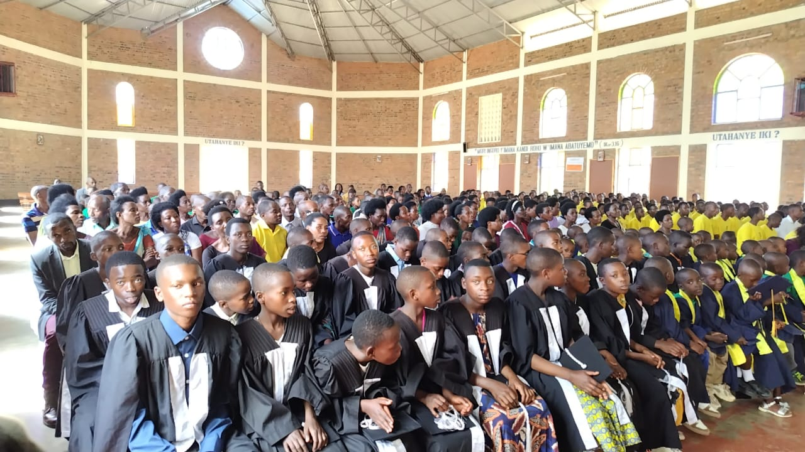

Clubs & Sports
Every student is encouraged to discover talents, work as a team and lead.

Environment & Conservation Club
Students lead biodiversity conservation and environmental care activities in the school and surrounding community.
Games & Athletics
Football, athletics and inter-house competitions build fitness, teamwork and school spirit.

Science & Technology
Hands-on projects and ICT that prepare students for a modern, technology-driven world.
Caring for the Environment
Education is not limited to classroom subjects — it prepares students to protect their country and environment.

G.S. Karambi has promoted environmental protection activities and encouraged students to participate in conservation. Student club activities focus on the conservation of biodiversity and on encouraging young people to care for the environment.
Fieldwork visits, such as the trip to Nyungwe forest, let students observe wildlife and understand the ecosystems they are learning to protect.
Student Well-being
Through partnership, the school has invested in projects that improve daily life for students and staff.

Rainwater Collection Tanks
Water shortage was once a challenge at the school. The construction of rainwater collection and storage tanks gave the school a way to collect and store water for use when needed.
The tanks have contributed to improved hygiene, better living conditions for students and staff, and a reduction in water shortages — a good example of how cooperation with partners helps a school address infrastructure challenges.
Gallery
Click any photo to view it larger.